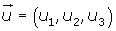
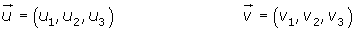
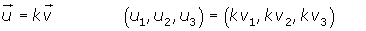
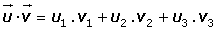

Vector Basic Formulas 1
Components

Magnitude or Lenght


Distance between two points

Unit Vector

Vector Addition


Scalar Multiplication

Linearly Dependent Vectors



Linearly Independent Vectors
Dot Product


Magnitude of a Vector

Angle Between Two Vectors

Orthogonal Vectors